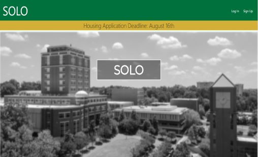
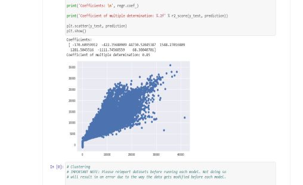
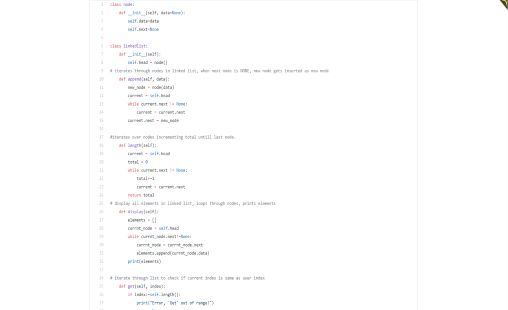

About me
My name is Cole Higgins and I just Graduated with a B.S. in Computer Science from the University of North Carolina at Charlotte.
I have a passion for programming/development and strive to use my skills to solve creative and innovative solutions in a professional
environment. Whether it's a few lines of code, or a full-scale application, It is my goal to learn about and create products that help
make peoples lives easier. Aside from work, my hobbies include surfing, fly fishing, hiking, and going out and socializing with friends.
I always love trying new things and love to challenge myself in all aspects of my life!
My Philosophy
My life philosophy involves three things: hard work, having a great attitude, and living life to the fullest. First,
is hard work. If you want something in life, you need to work for it. The best things in life are those that
require hard work and persistence. Taking those small steps, in the beginning, can be the hardest, but never giving
up and not letting anyone bring you down is the only way to achieve greatness. Second, is having a great attitude. A
close mentor of mine once said, "The most important thing in life and work is having a positive ATTITUDE! having a good
attitude overcomes any shortcomings and can help anyone grow". Year after year I find this to be one of the most important
qualities in my life and I try every day to stay positive and help others. Third, is living life to the fullest. Life can
be crazy, and everyone is running it like a marathon. The best thing you can do is to stop, take a look around, and decide
why you are running. Too many people get stuck in this straight tunnel called life. So go run in whatever direction you want and
enjoy life to the max.
A pre-college roommate finding web application

Full-Stack development project using Django and Python. Familiarized my self with Model-View-Template architecture as well as server deployment using PythonAnywhere.
Data Mining and Predictive modeling using Pandas

Data Mining project using a variety of Python packages including Pandas, NumPy, Seaborn, and MatPlotLib to Predict sales over the course of 6 weeks.
A custom .jpg to .mp4 program
Building a custom picture to video application similar to Boomerang. Currently working on refining the code and getting it deployed to a server. Check it out soon !!!
Practice with data scructures

Practicing and refreshing up on my programming skills with a variety of data structures and algorithms. Working with Linked Lists, Binary Trees, Queues, etc...